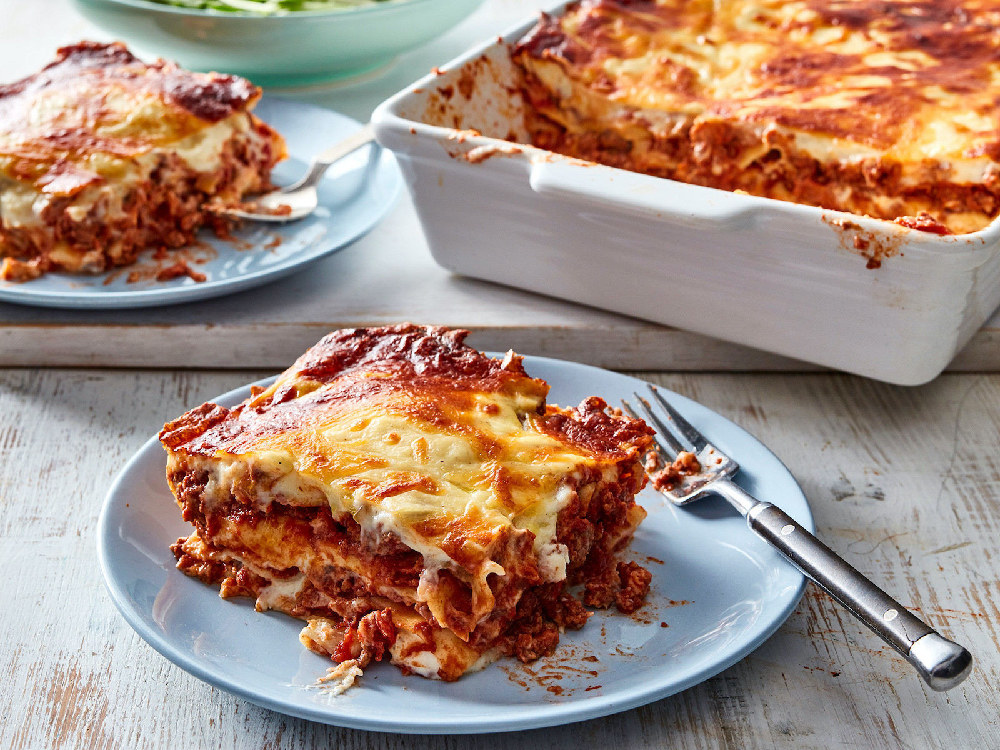

Lasagne

Delicious Homemade Beef Lasagne!
An extra cheesy traditional lasagne. This quick and easy recipe is perfect for a weekday meal. It freezes well for make ahead meal planning perfect a quick defrost on a busy nights too. This recipe doesnt skimp on flavour with plenty of garlic, herbs and seasoning.
Ingredients
- Dry Lasagne Sheets
For The Bolognese
- 2 tbsp Olive Oil
- 1 Onion
- 3 garlic cloves
- 500g beef mince
- Tomato Paste
- Passata
- Oregano (Dried or fresh)
- Basil
- Salt & Pepper
- Butter
For the Beschamel
- 3 Tbsp Flour (Regular or gluten free)
- 3 Tbsp Butter
- 3 cups Milk
- 1/2 cup Grated Parmesan
- 1/2 cup Gated Mozzarella
- 1/2 tsp Nutmeg
- Salt & Pepper to taste
Steps
Prepare the Bolognese
- Finely chop your onions
- Finely chop garlic
- In a large fry pan heat the olive oil
- Add Onions with a pinch of salt and cook for 5 minutes til browned and beginning to lightly caramelize
- Add Garlic and cook til fragrant. Stirring constantly to avoid burning.
- Add Beef Mince. Cook til browned thoroughly
- Add tomato paste, Passata and pinch of salt.
- bring to a simmer, then lower heat and simmer for atleast 20 minutes.
Prepare the Beschamel
- In a saucepan melt your butter, Add flour and whisk.
- Season with pepper and pinch of salt.
- While whisking, pour in milk, 1/4 cup at a time. Whisk continually, until contents become thick, and glossy.
- Repeat Step 3 until all the milk has been added, or until you reach your desired consistency and amount of sauce.
- Turn off heat and stir in parmesan, mozzarella and nutmeg.
Layer your lasagne
- In a rectangle baking dish spread a small amount of the bolognese and bechamel sauce along the bottom.
- place one layer of dried lasagne sheets on top. You can add a little extra cheese here if you like but its not necessary.
- Add a layer of bolognese sauce and a layer of bechamel.
- Continue layering to the top of the baking pan.
- cover with foil and cook in fan based oven at 180c for approximately 30 minutes.
- remove foil, add mozzarealla and continue to cook for a futher 10 mins.
- Let it rest for a few minutes to cool down. Serve & Enjoy!